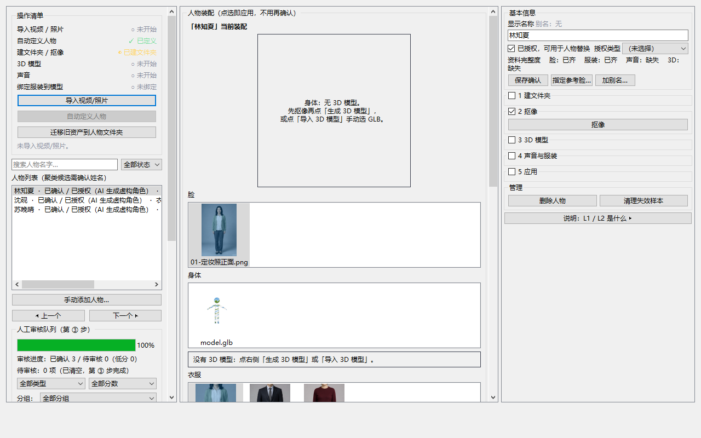
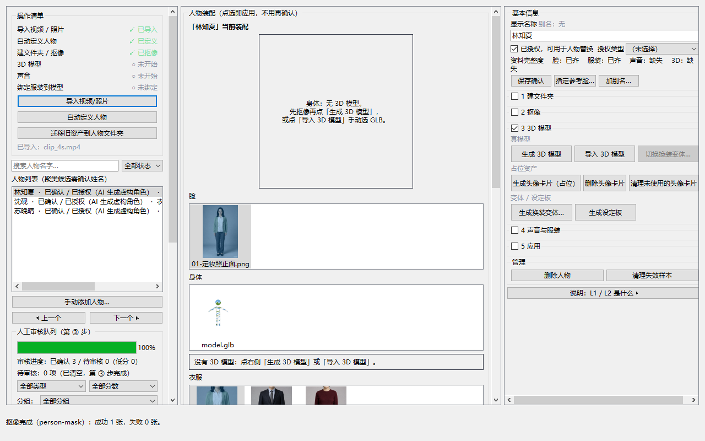
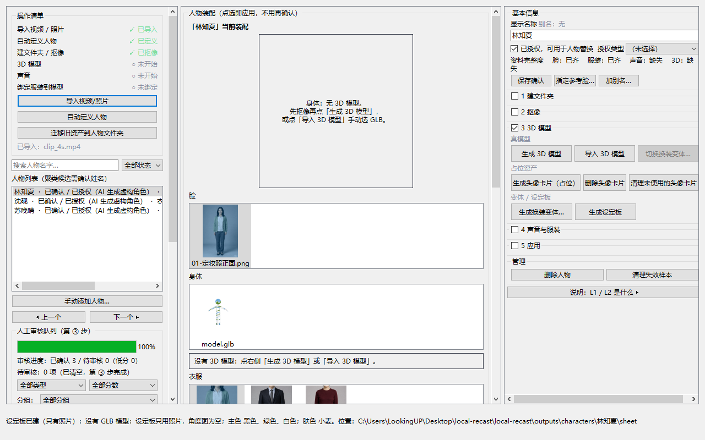
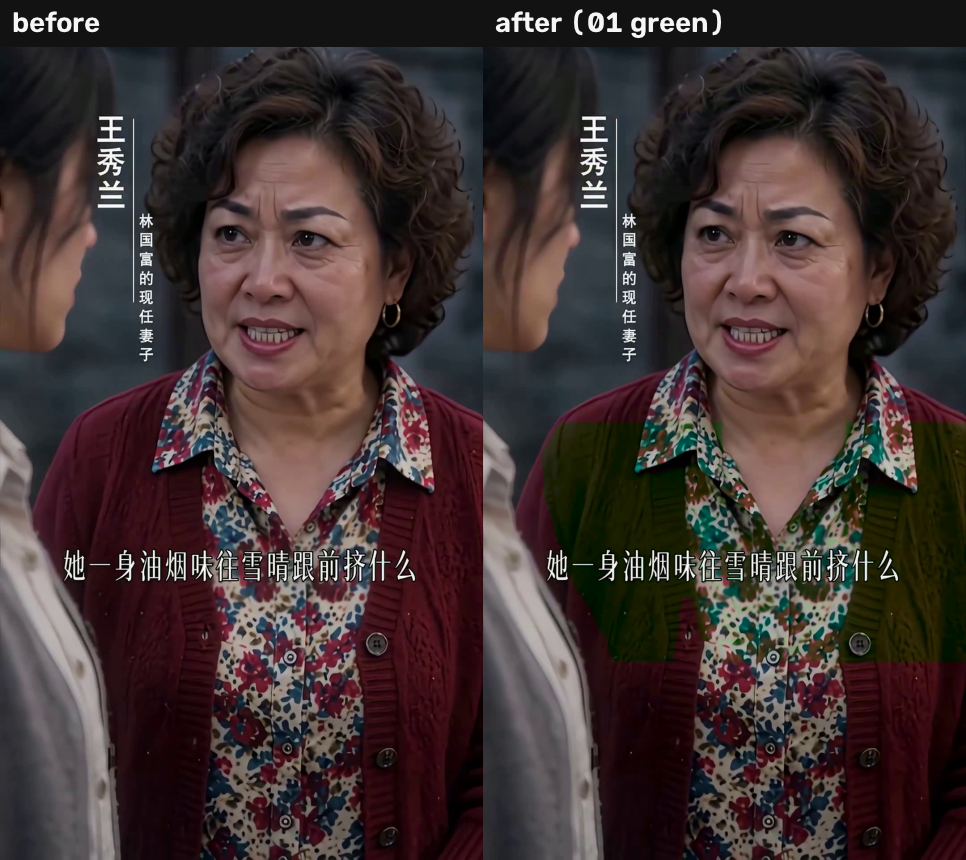

local-recast 使用手册
人物库 · 换装预览 · 整段替换
1 三分钟跑通
开三个窗口，按顺序执行。第一条导入测试人物，第二条打开界面，第三条出单帧对比图。
cd C:\Users\LookingUP\Desktop\local-recast\local-recast :: ① 导入 3 个测试角色（幂等，重复跑不会重复建） .venv\Scripts\python.exe scripts\seed_demo_characters.py :: ② 打开人物库 .venv\Scripts\python.exe -m recast ui :: ③ 单帧换装，看效果 .venv\Scripts\python.exe scripts\demo_replace.py ^ --video "C:\Users\LookingUP\Desktop\demo\1\装穷提亲，娶到全家嫌弃的她 第1集_1.mp4" ^ --time 90 ^ --costume "C:\Users\LookingUP\Desktop\demo\测试素材\服装\04-焦糖长风衣.png" ^ --person 0 --part upper
第三条命令会在 outputs\_demo\ 写出 replace_ab.png（左右对比）和 replace_zoom.png（放大），终端同时打印分割方式与三个审计数字。
2 界面在哪看什么

| 区域 | 看什么 |
|---|---|
| 左栏顶部 | 操作清单：六步的完成状态。已导入 / 已定义 / 已抠像 表示这步做过了，灰字「未开始」表示还没做。 |
| 左栏中部 | 人物列表：一行一个角色，行尾三个徽标是「已确认 / 授权状态 / 衣服·声音·3D」。行太长会截断，鼠标悬停看全文。 |
| 中栏 | 人物装配：脸、身体、衣服分别选了哪个文件。点一下即应用，不用再确认。 |
| 右栏 | 资料完整度：脸 / 服装 / 声音 / 3D 四项是否齐。下面 1–5 组按钮就是管线顺序。 |
| 底部 | 状态栏：每次操作的结论都在这里，长文本会折行。 |
3 逐步操作
导入片段
点左栏的 [导入视频/照片]，选一个视频或图片。导入只是登记路径，还不会跑任何模型——所以这一步是秒完成的。
ffmpeg -ss 88 -t 4 -i 第1集.mp4 -c:v libx264 -crf 20 clip_4s.mp4
选人
在左栏人物列表里点一行。选中后中栏和右栏才有内容，右栏的按钮也才会亮。

抠像
展开右栏第 2 组，点 [抠像]。它把 face\ 里的照片切出透明背景，写进 cutout\。已完成过的照片会跳过，不会重复算。

rembg 也能抠。程序会退回本项目自己的分割后端（yolo-seg / rmbg），并保留软边。
只有两种都缺的时候才会报错，提示该装什么或该把权重放哪里。
生成设定板
第 3 组里点 [生成设定板]。它出多角度转盘图 + 外观色卡，落在 sheet\。

[生成 3D 模型] 或 [导入 3D 模型]）。
发色和体型在没做分割时会留空，猜错的发色会污染后面每一次重绘。
换装预览
第 5 组里点 [换装预览…]。取一帧，把 costume\ 里的服装配色换上去，写出前后两张 PNG。
这条状态栏已经给出了全部判断依据：分割用了哪个后端、改了多少像素、背景有没有被破坏、接缝有没有新增、结论是 ok 还是 review。
4 整段视频替换
预览确认没问题，再用命令行跑整段。界面上的按钮只做单帧预览——整段会跑几分钟，不该由一次点击静默触发。
.venv\Scripts\python.exe scripts\demo_replace_clip.py ^ --video "C:\Users\LookingUP\Desktop\demo\_tests\clip_4s.mp4" ^ --frames 120 ^ --costume "C:\Users\LookingUP\Desktop\demo\测试素材\服装\04-焦糖长风衣.png" ^ --redetect 4 --out outputs\_demo\clip_4s

| 参数 | 含义 |
|---|---|
--frames | 跑多少帧。不给就跑完。试参数时给 48 就够判断。 |
--redetect | 每几帧重新检测一次人。越小越准越慢；4 是速度和稳定性的平衡点。 |
--person | 画面里第几个人，按占有前景从大到小。 |
--part | upper / lower / full。非 full 会在腰部留一条分界，这是设计。 |
--backend | auto 会选本机最好的：yolo-seg → birefnet → rmbg → grabcut。 |
产物在 --out 目录：replaced.mp4（成片）、segment.mp4（同一片段原样重编，用于对比）、外加逐帧审计日志。实测 4 秒 120 帧输入输出帧数一致，外推 168 秒一集约 20 分钟。
5 三个指标怎么读
| 指标 | 合格线 | 含义与判断 |
|---|---|---|
| 背景损伤 | < 2% | 人物以外被改动的像素比例。换色路径通常 0.000%——背景逐字节没动。一旦超过 2%，说明掩码漏到了背景。 |
| 接缝增量 | 相对原帧 < 1.15× | 颈部的边缘强度相对身体纹理的倍数变化。原帧自身就有 3.2 左右（领子、项链、下颌边），所以只看相对原帧的增量，不看绝对值。 |
| 填充率 | 70–95% 正常 | 区域占自身外接框的比例。躯干本来就接近矩形，所以高不一定是错；到 100% 且四边都是直线才说明掩码退化成矩形。 |
状态栏结论 ok 表示三项都没超；review 会在后面列出哪一条超了，按那条去换帧或换后端。
6 报错对照表
| 提示 | 怎么办 |
|---|---|
| 抠像需要 rembg，未安装 | 已修：现在会自动退回本项目分割后端。若仍报此错，说明 models\segmentation\ 里也没有权重。 |
| 没有服装参考图：…\costume | 把一件衣服的平铺图或上身截图放进该人物的 costume\。 |
| 没有可用的一帧 | costume\ 和 face\ 里都没有图片。先导入照片或抠像。 |
| 区域填充率 100%，几乎是一个矩形 | 掩码漏到背景。换一帧、或换分割后端（--backend）。 |
| 只分出 N 个人，取不到第 M 个 | --person 超出画面实际人数。先给 --person 0。 |
| 不是大材小用…整片换不上 | 参考色与原衣色相差 120° 以上时会像滤镜。换邻近色相的衣服，或接受这个效果。 |
7 附录
目录
项目根 ├─ outputs\characters\<人物>\ face / costume / voice / cutout / model / sheet ├─ models\segmentation\ yolo11n-seg.pt（6.2MB，已下载） ├─ docs\manual_shots\ 本手册的原始截图 └─ scripts\ ├─ seed_demo_characters.py 导入 / 移除测试角色 ├─ demo_replace.py 单帧换装（调参用） ├─ demo_replace_clip.py 整段替换 └─ ui_drive.py 点击真实按钮跑一遍（出截图）
常用命令
:: 自检：后端、模型、显卡 .venv\Scripts\python.exe -m recast doctor :: 移除测试角色（只删 demo-seed 标记的行） .venv\Scripts\python.exe scripts\seed_demo_characters.py --remove :: 重跑本手册的截图 .venv\Scripts\python.exe scripts\ui_drive.py ^ --clip "C:\Users\LookingUP\Desktop\demo\_tests\clip_4s.mp4" ^ --character 林知夏 --shots docs\manual_shots
测试素材
Desktop\demo\测试素材\：3 个虚构角色（林知夏 / 沈砚 / 苏晚晴）+ 4 件平铺服装。
全部由图像模型生成，不对应任何真实人物，因此不涉及肖像权；图片角标「AI生成」是平台标识，不要裁掉。
yolo-seg 是 AGPL、rmbg 是非商用权重，只适合内部自用；要对外交付需换成 BiRefNet（MIT）或买授权。
本手册的每一步都由 scripts/ui_drive.py 点击真实按钮验证，7/7 通过；
含「自动定义人物」的 8 步完整一轮同样 8/8 通过（该步会让截图编号错一位，出图时用 --skip-auto-define）。